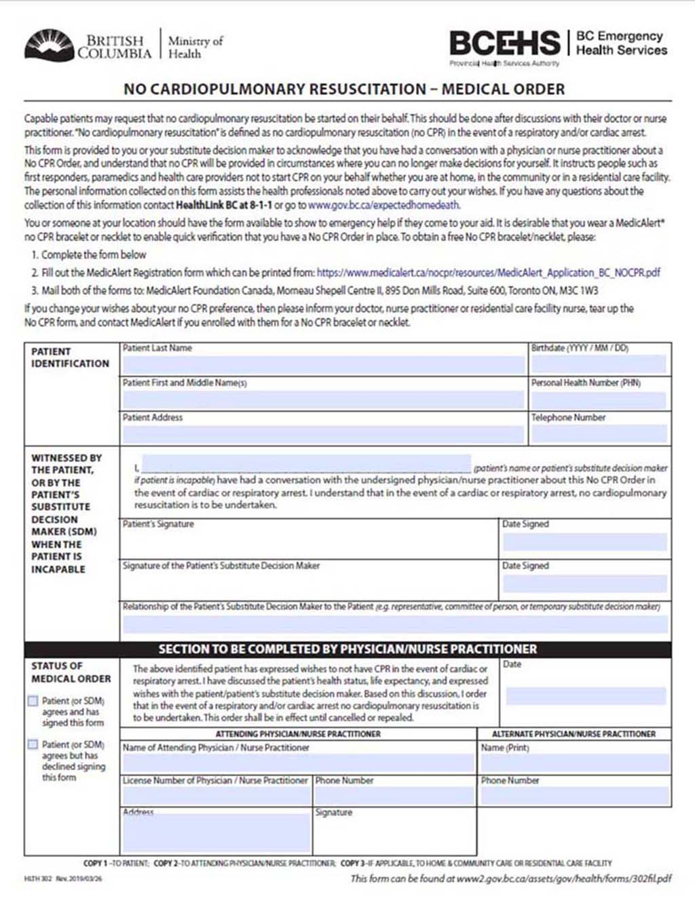
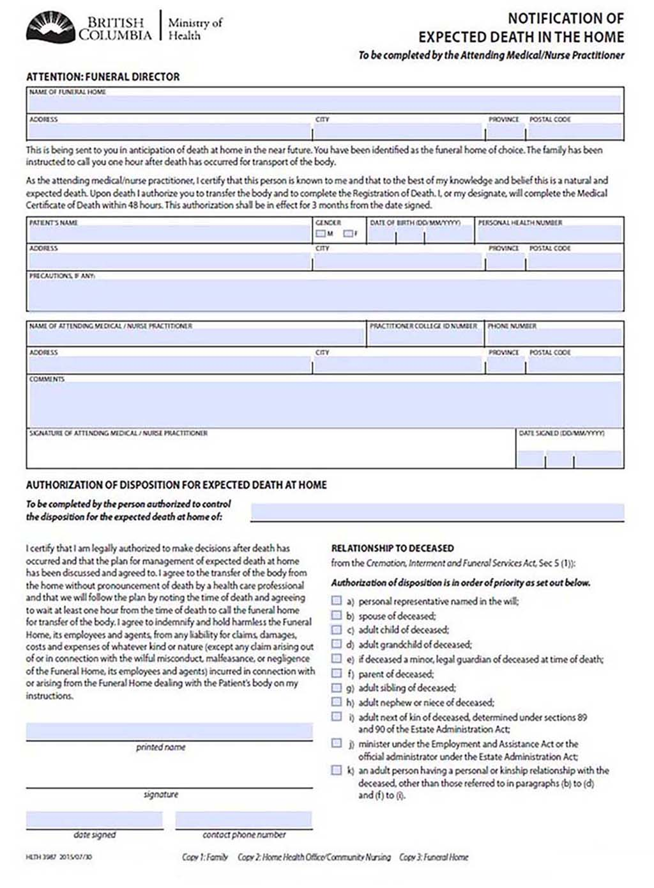
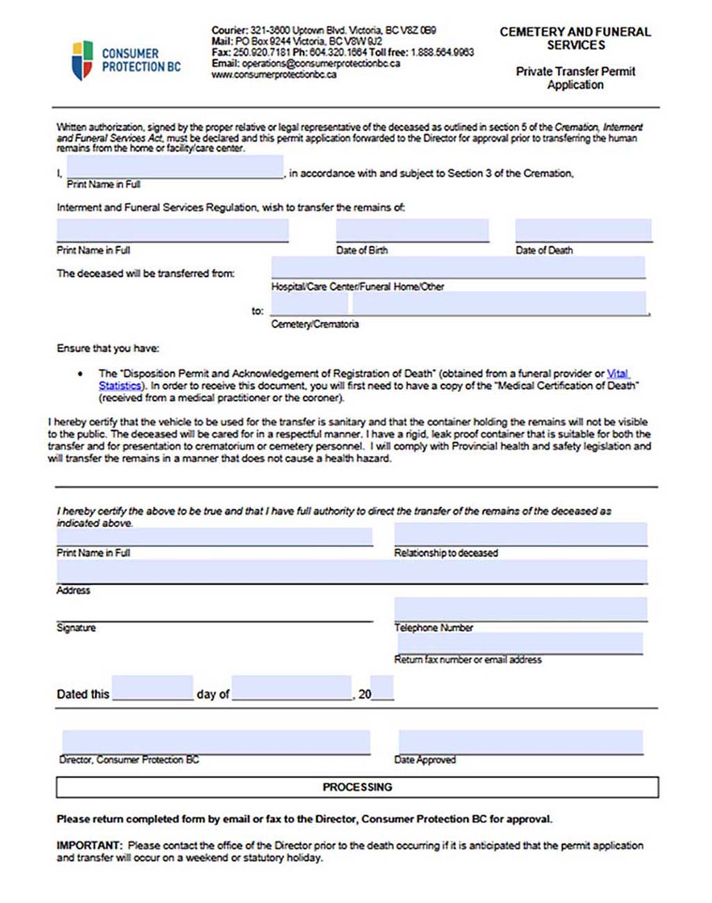

You may be at a stage in your life where you would not want life-prolonging measures administered to you. But if you don't make
your wishes known, your doctor and loved ones may face some tough decisions. In an emergency, you would
probably receive CPR. Then you could be placed on life support, even if you didn't want it. Your doctor and family may have a
hard time deciding how to continue your medical care. Also, it may be very hard for your loved ones to decide when to stop life
support.
You can take back control by signing the No CPR - No DNR (Do Not Resuscitate) form and by wearing the bracelet.
There is no guarantee
that your instructions will be followed - as doctors are in the business of keeping people alive - but it does give you more
control over your decisions.

Have them stored in a known place for your family and
the medical team to find and follow. This tells Paramedics and the
medical team that you do not wish to be revived through artificial respiration methods. This is a heavy decision to make but
being informed of the facts about CPR and Do Not Resuscitate procedures and outcomes will help give you the perspective you
need to make these decisions.
You can choose to receive CPR or be put on a ventilator if your heart or breathing stops. Being put on a ventilator is sometimes
referred to as "being put on life support." CPR doesn't always work to resuscitate people, or "bring them back". And the older and
sicker you are, the less likely it is to work.
If you wish to download the form you can do so here at:
No CPR Request Form.
To order a free Medic Alert® - No CPR bracelet or 'necklet' you also need to download and complete a form called:
No CPR Bracelet.
If you change your mind you need to let your physician, care-givers and family know, tear up the No CPR form and let Medic Alert
know you have reversed your decision. Here are some of the issues to consider:
You have lived in your home and you want to know if you can also die there when the time comes. Your family may be pressuring you
to move into a care home, but you may wish to stay at home till the very end. In this case you should know about E.D.I.T.H.
(Expected Death in the Home).
If feasible filling out the E.D.I.T.H. form makes your wishes known to both your family and the medical team.
You have the choice to die at home if the request is a reasonable one, if your family supports it and if approved by your Doctor.
You must have completed the 'No CPR Request' Form in order to pursue this avenue.
Relatives and family that are permitted to take on the role of disposition of the body under the Cremation, Interment and Funeral Services Act, Sec 5 (1)) after death include in the following order of priority:
Completing this form allows a Funeral Director to remove the body from a home without pronouncement of death. Pronouncement of
death is not required by BC Law, although if possible having a nurse practitioner or doctor do so is considered sound medical
practice.
There may be circumstances when pronouncement is difficult or families choose to waive pronouncement. If a person dies in British
Columbia, the death must be registered with the Vital Statistics Agency. A Medical Certificate of Death form is completed by the
physician within 48 hours after a death. The medical certificate of death is forwarded to the funeral director who will register
the death. The funeral director can then issue a death certificate and burial permit.

This form from the Govt of B.C. website (gov.bc.ca) is to be filled out by the Attending Medical/Nurse Practitioner. This top
part of the form is for the Practitioner to acknowledge the Funeral Home that is to accept the body.
You can download the
A Notification of an Expected Death in the Home form here. It must be completed by the your physician or a nurse
practitioner and then sent to the funeral home before your death.
If you wish and have decided as a family that you would like to transport your loved one's body to the funeral home yourself you can do so provided you have the proper vehicle and follow the rules stipulated. This form allows family to take them to the funeral home or crematorium. This may seem strange, but it allows families to gather and have more time with the deceased, perhaps to have a wake or some other kind of ritual.

Your family will need to have the death certificate before they can do the transfer. They must also agree that their vehicle is sanitary and that you have obtained safe and secure container for the body. The container must not be able to be viewed by the public while transporting the body. As well, you must agree that at all times, the body will be treated with respect. You can download this form Private Transfer Permit here (Please note that web pages can and may be moved at any time but this download link was valid at time of this publication.
There is a lot to think about. Don't leave it rolling around in your head, write everything down. You will have a sense of completion and can pat yourself on the back for a job well faced. Check out our {{pathObject.parent_name}} > {{pathObject.child4_name}} to help you get your 't's' crossed and 'i's' dotted. Print it out and follow it along while you put together all your important papers.